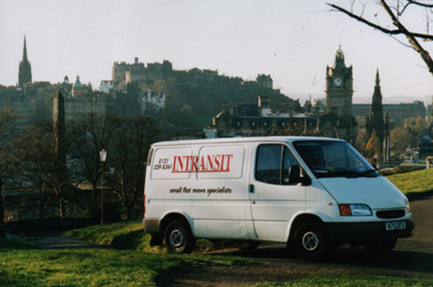

|

"If you can get it in a transit...phone
Intransit"
Intransit has found a market area that competes with
the "rent your own van" option. Most van rental companies
charge between £40-£50 per day for a transit van.
Intransit is a better deal in many ways;
Remove financial stress
We charge £47 for a van load. For a single item £27
and a suite £37. We do not charge by the hour, removing
the clock watching stress associated with the hourly van rental.
Remove driving stress
All Intransit vans are maintained in top mechanical condition.
Our experienced driver will meet you at the flat at exactly the
agreed time and leave you and your possessions at the new flat
- saving all the hassle of form-filling in, driving, parking
and the collecting and dropping off your hired van.
Remove labour stress
Our driver will organise the loading of the van and will be an
extra pair of hands to help you and any friends you can get for
the move. All Intransit drivers know exactly how to move that
awkward sofa through the door. We are calm-natured, friendly
and very fit. We understand that moving house is always nerve-racking
and often under difficult emotional circumstances.
When moving house you are in between places of security....a
highly stressful time. Intransit understands this. We have a
customer base of regulars and word-of-mouth which accounts for
54% of our work. |